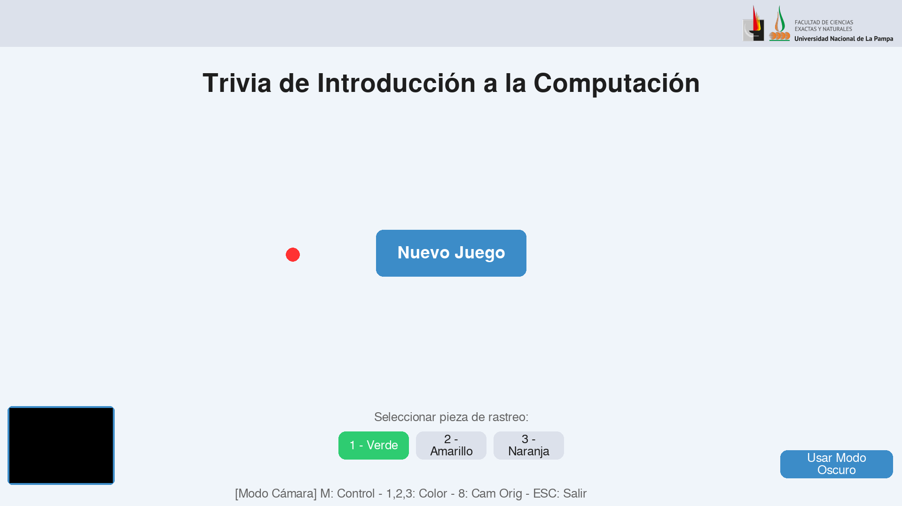
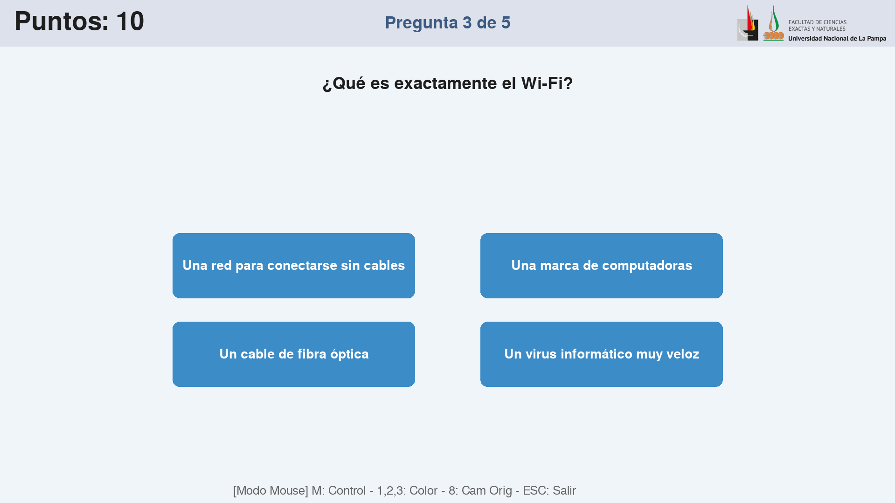
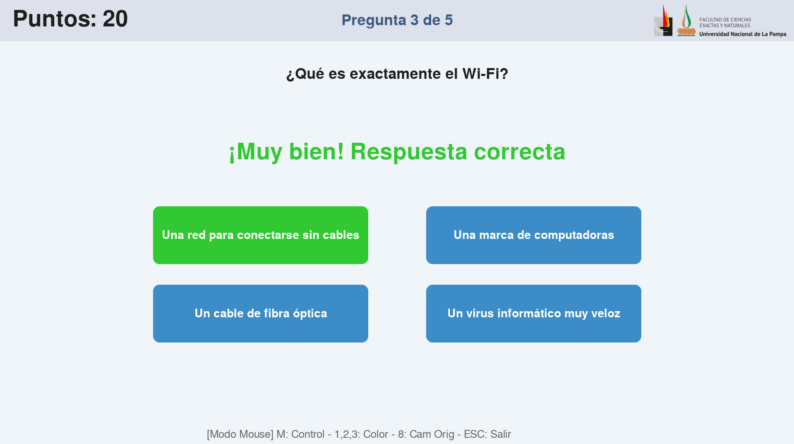
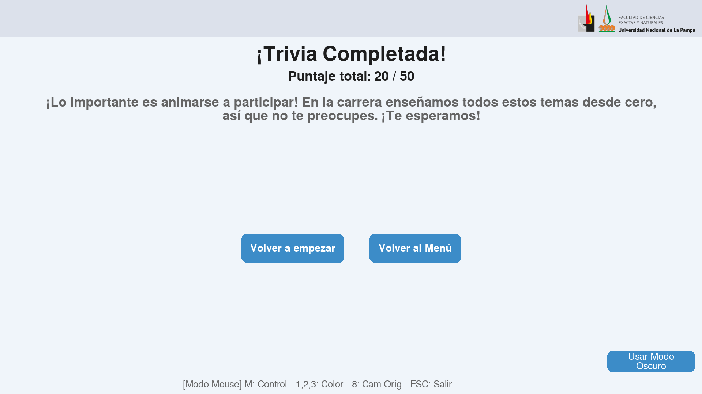

Juego Trivia con cámara
Descripción General
La propuesta, desde la materia Informática Educativa 2, era realizar un recurso para las Jornadas de Puertas de la Facultad de Ciencias Exactas y Naturales. Las posbiles actividades fueron las siguientes:
- Creación de juego interactivo con Python.
- Actividad con Robótica Educativa.
- Demostraciones de Realidad Aumentada.
- Animaciones generadas con IA: Personas/Sucesos relevantes de la Computación/Matemática combinados con obras de arte/música populares.
Para esta ocación, se optó por la primera, la realización de un juego interactivo con Python, con un agregado de realidad aumentada.
La propuesta
La propuesta consistió en un juego tipo trivia sobre preguntas de computación en general. El puntero se moverá con la cámara, la cuál está programada para que detecte colores. El usuario moverá el puntero con un objeto del colór que esté seleccionado. Cuando se "tapa" el color, se detecta como un click (esto se ve reflejado en el puntero cuando toma el color rojo). De esta manera, el usuario posiciona el puntero sobre la respuesta que cree correcta y luego "tapa" el color para seleccionarla.

La trivia consiste en cinco preguntas sencillas sobre la computación en geneneral (hay una base de 10 preguntas, las cuales se escogen aleatoriamente). Al hacer clic en "Nuevo juego", aparece la primer pregunta, seguido de una cuenta atrás de tres segundos antes de que aparezcan las respuestas a elegir. Esto es para "obligar" al usuario a que lea la pregunta y no se precipite a escoger la repuesta inmediatamente.

Si la respuesta es correcta, se tornara en color verde y aparecerá en pantalla el mensaje "¡Muy bien! Respuesta correcta", caso contrario la respuesta se tornará color rojo y aparecerá el mensaje "¡Ups! Respuesta incorrecta".

Al final de la partida siempre abrá un mensaje motivacional, incluso si el usuario respondió mal todas las preguntas.

En la base del menú, se podrá observar que hay tres opciones:
- Verde
- Amarillo
- Verde
Acá se elige el color que detectará la cámara. Esto se implementó para evitar que el juego se "equivoque" con el puntero. Por ejemplo, si está seleccionado el color verde, y la cámara detecta muchos objetos color verde (la ropa, por ejemplo), el puntero se "vuelve loco", y se vuelve imposible controlarlo. Para solucionarlo, se cambia a otro color, por ejemplo amarillo.

En la parte inferior izquierda, se puede observar la cámara binaria, donde cada punto blanco es el color seleccionado detectado. Esto ayuda a identificar muy bien si tenemos ruido de otros objetos del mismo color que interfieren con la cámara.
La idea principal era mover el cursor con la mano, utilizando la librería para Phyton MediaPipe proporcionada por Google. La misma utiliza Inteligencia Artificial y facilita mucho la tarea. Se utiliza principalmente para detectar rostros, pero también se puede configurar para que detecte objetos. En esta occasion, no se puedo lograr su funcionamiento por limitaciones de Hardware, por lo tanto se optó por otra la alternativa que detecta colores.
Conclusión
Para mi sorpresa, la trivia superó las expectativas. Tanto alumnos como profesores pudieron realizarla prácticamente sin inconvenientes, más allá de algún que otro probema menor con el color seleccionado, pero se solucionaba al instante cambiando de color. Noté que las preguntas eran demasiado sencillas, ya que casi siempre los alumnos que jugaban las acertaban todas. Una posible mejora podría ser la incorporación de distitnos "niveles" de dificutad, y así adaptar las preguntas, según el público presente.